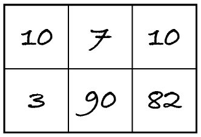

24.5. Higher and higher
Given a grid of non-negative integers, what is the length of the longest path of ascending numbers, if we only move vertically or horizontally to an adjacent integer? Consider the following grid.
The longest ascending path is (7, 10, 82, 90) and therefore the answer is 4. Paths (3, 10) and (10, 82, 90) also ascend, but they’re shorter. Path (3, 82, 90) isn’t valid because 82 isn’t adjacent to 3. Path (3, 7, 10, 82, 90) isn’t valid because 3 and 7 are diagonally adjacent.
If there were any paths with duplicate integers, they wouldn’t be valid either because the sequence must be strictly ascending.
[1]:
from algoesup import check_tests, test
higher_tests = [
# case grid length
('one longest path', [[10,7,10], [3,90,82]], 4),
('all numbers equal', [[2, 2], [2, 2]], 1),
('go around grid', [[2,3], [1,4], [6,5]], 6),
('two longest paths', [[6,7,8],[6,5,4],[3,2,1]], 5)
]
check_tests(higher_tests, [list, int])
OK: the test table passed the automatic checks.
24.5.1. Exercises
Exercise 24.5.1
Explain why this problem can be solved with backtracking.
Exercise 24.5.2
Explain which backtracking template you will use and how you will adapt it to this problem, by answering these questions:
Which of the templates applies to this problem:
all permutations satisfying the constraints
best permutation satisfying the constraints
all subsets satisfying the constraints
best subset satisfying the constraints?
What are the candidates and the extensions?
When is an extension compatible with the current candidate?
What are the local and global constraints?
When is a candidate a solution?
What is the initial best solution?
Exercise 24.5.3
Implement your algorithm.
[2]:
def higher(grid: list) -> int:
"""Return the length of the longest path of ascending numbers in grid.
Preconditions: grid is a table of non-negative integers
with r > 0 rows and c > 0 columns
"""
pass
test(higher, higher_tests)
Exercise 24.5.4
There’s another algorithmic technique that solves this problem more efficiently than backtracking. Which technique is it and why is it more efficient? (You’re not asked to outline an algorithm: you only have to justify that a more efficient alternative technique exists.)
Exercise 24.5.5 (optional)
Implement the more efficient approach.
[3]:
def higher(grid: list) -> int:
"""Return the length of the longest path of ascending numbers in grid.
Preconditions: grid is a table of non-negative integers
with r > 0 rows and c > 0 columns
"""
pass
test(higher, higher_tests)